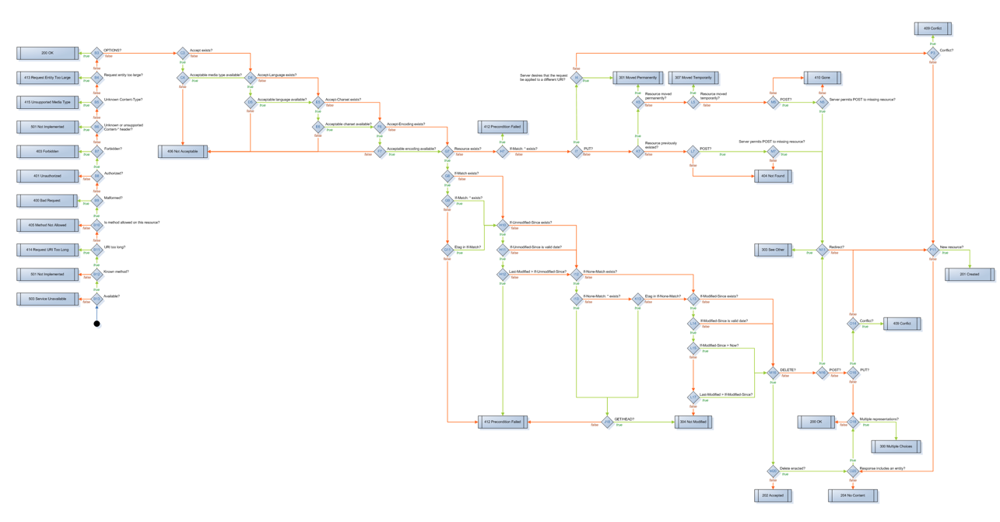
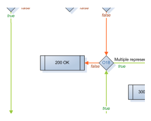
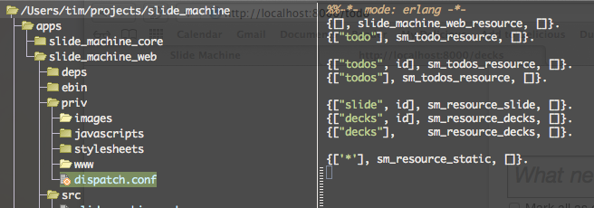
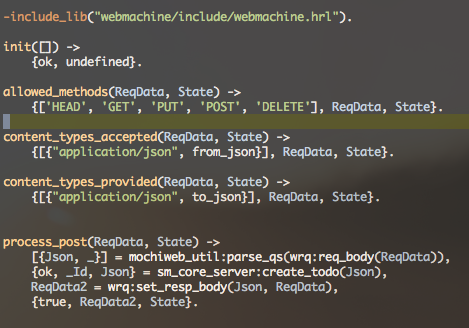
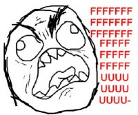
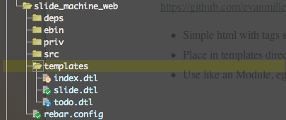
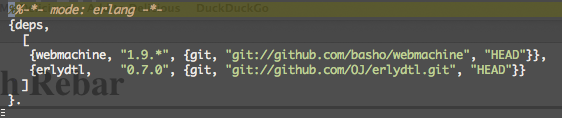
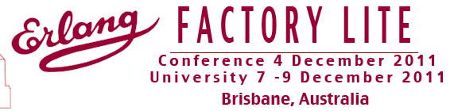

Erlang WebDev with WebMachine
Tim McGilchrist (@lambda_foo)
Outline
- What is Webmachine?
- General structure of a project
- ErlDTL Templates
- Using Rebar
Web Development
Any language worth it's salt needs to provide a web development library or
three.
www.coboloncogs.org anyone? Srsly
General approaches to the web:
- focus on heavy three-tier applications. Java/EE
- hide the web behind language-specific constructs. Rails/Django
- provide low-level access to HTTP. Node.js
What is Webmachine?
"Written in Erlang, Webmachine is an application layer that adds server-side
HTTP semantic awareness on top of the excellent bit-pushing and HTTP
syntax-management provided by mochiweb, " wiki.basho.com/Webmachine.html
- Resource Oriented
- HTTP Semantics
- Simple
WebMachine is not a "framework"!
HTTP is Simple, Right?

Hello World WebMachine style
-module(hello_resource).
-export([init/1, to_html/2]).
-include_lib("webmachine/include/webmachine.hrl").
init([]) ->
{ok, undefined}.
to_html(ReqData, State) ->
{"Hello, Webmachine world", ReqData, State}.

Dispatch Rules

- Define URI paths via {pathspec, resource, args} or {pathspec, guard, resource, args}
- Terms used to match a rule are available via wrq:path_info(id,
ReqData)
- Located in priv/dispatch.conf under the application root
Dispatch Example
{["todos", "*"], sm_todos_resource, []}.
GET "/todos/12/author"
"12/author" => wrq:disp_path
"/todos/12/author" => wrq:path
[] => wrq:path_info
["12", "author"] => wrq:path_tokens
Resources
WebMachine is a resource server for the web!
Driven via HTTP methods; GET, PUT, POST, DELETE
Uses correct HTTP status codes.
Well defined place to handle each HTTP method.
- GET => content_types_provided() and to_html()
- PUT => content_types_accepted() and from_html()
- POST => create_path() or process_post()
- DELETE => delete_resource()
Example
A Todo Resource pulled from a demo app.

Problems with POST
- Overloaded Semantics
- Create or Update?
- Switch on post_is_create()
- true + create_path() = create
- false + process_post() = update

ErlDTL Templates
Django style templates for Erlang, similar to JSP and ERB templates.
https://github.com/evanmiller/erlydtl
- Simple html with tags sprinkled throughout.
- Place in templates directory and rebar knows what to do
- Call it just like an Module, eg todo_dtl:render([Arg])

Building with Rebar
- Create a top level rebar.conf
- Put in your dependencies
- Compile and off you go

Recap
- WebMachine is brutally RESTful!
- Is not a framework!
- Conforms to HTTP RFC (methods, status codes)
- Is all about Resources
You need to provide all the plumbing.
Want to serve JS & CSS, you write the resource.
Authorisation? Callback provided and you write the rest.
DB / ORM? Same.
Get the picture?
Resources
- http://wiki.basho.com/Webmachine.html
- https://github.com/basho/rebar
- http://alancastro.org/2010/05/01/erlang-application-management-with-rebar.html
- http://learnyousomeerlang.com/ - Erlang eBook
- http://www.chicagoboss.org/ - Fully Featured Framework
- https://github.com/mochi/mochiweb
One More thing!
Feedback and suggestions for Erlang Factory Lite.

←
→
/
#